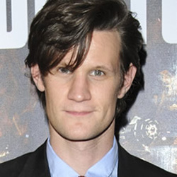

Home| The Doctors| The Companions| The Villians| Show History
Home| The Doctors| The Companions| The Villians| Show History |
Matt SmithMatthew Robert "Matt" Smith (born 28 October 1982)[1] is an English actor and film director. He is best known for his role as the Eleventh Doctor in the British television series Doctor Who, for which he received a BAFTA Award nomination in 2011.[2] Smith initially aspired to be a professional footballer, but spondylolysis forced him out of the sport.[3] After joining the National Youth Theatre and studying Drama and Creative Writing at the University of East Anglia, he became an actor in 2003, performing in plays likeMurder in the Cathedral, Fresh Kills, The History Boys and On the Shore of the Wide World in London theatres. Extending his repertoire into West End theatre, he has since performed in the stage adaptation of Swimming with Sharks with Christian Slater,[4] followed a year later by a critically acclaimed performance as Henry in That Face.[5] Before his role in Doctor Who, Smith's first television role came in 2006 as Jim Taylor in the BBC adaptations of Philip Pullman's The Ruby in the Smoke and The Shadow in the North while his first major role in television came as Danny in the 2007 BBC series Party Animals. Smith, who was announced as the eleventh incarnation of the Doctor in January 2009, is the youngest person to play the character in the British television series.[6] He left the series at the end of the 2013 Christmas Day special, "The Time of the Doctor".[7] He will play a major role in upcoming movie Terminator: Genisys and its two sequels |
Brendan Davy Monica DuCong'e Eric Eyler Kayleen Garcia Katie Hyche Ryan Moeller |
Christine O'Brien Alex Recinos Julia Schwartz Madeleine Schwartz Ann Marie Skjold Ashly Wilkins |
[Reference Links] |